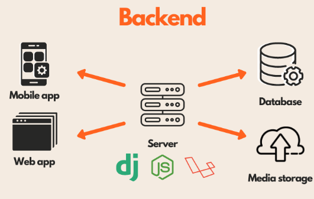

Tecnologías de backend Backend es el software que maneja los datos de una aplicación web o móvil. Contiene toda la lógica para acceder y administrar los datos, a los que los usuarios comunes no pueden acceder. El backend también es responsable de manejar las solicitudes web y las respuestas web. Lenguajes de programación 1. PHP PHP, un acrónimo de Hypertext Preprocessor, es un lenguaje de scripting del lado del servidor y es uno de los lenguajes de programación más utilizados para el desarrollo web backend. Podemos validar esta declaración haciéndole saber que plataformas como Wikipedia, WordPress, Facebook y muchas otras dependen de PHP. Se prefiere este lenguaje en particular para el desarrollo web debido a varias razones destacadas, como la compatibilidad multiplataforma, las características de OOP, la fácil integración con HTML, CSS, JavaScript, etc., un gran apoyo de la comunidad, una mejor flexibilidad y seguridad, y muchos más. Además, el idioma es bastante fácil de aprender y usar. Además, existen varios frameworks PHP de renombre como Laravel, Symfony, CodeIgniter, etc. que puede considerar. 2. Python Otro lenguaje que se prefiere para el desarrollo de backend, específicamente en los tiempos actuales, es Python. Es un lenguaje de programación de alto nivel y propósito general que admite múltiples paradigmas de programación, como Orientado a Objetos, Procesal y Funcional. Instagram, Spotify, Google, etc.son algunas de las plataformas populares que utilizan Python en sus pilas de tecnología. El lenguaje le proporciona algunas características notables como soporte de biblioteca enriquecido, fácil integración con otros lenguajes, soporte de programación GUI, compatibilidad con tecnologías de tendencias, etc. Además, Python tiene una sintaxis muy simple y ofrece mejores aspectos de legibilidad de código que posteriormente hacen es fácil de aprender y usar. Varios marcos web de Python populares que puede tener en cuenta son Django, Flask, etc. 3. JavaScript Honestamente, JavaScript no necesita presentación por su rol extenso en el desarrollo web. En realidad, es una de las unidades fundamentales del desarrollo web junto con HTML y CSS. El lenguaje está siendo preferido por una gran cantidad de desarrolladores para el desarrollo web, y también se encuentra en la primera posición en varios índices de renombre para los principales lenguajes de programación. Además del desarrollo web, el lenguaje también se puede utilizar para el desarrollo de juegos, desarrollo de aplicaciones móviles, etc. Algunas de las características considerables de este lenguaje en particular son: imperativo y estructurado, ligero, soporte de programación orientado a objetos, independiente de la plataforma y muchos otros. Además, la mejor parte es que JavaScript se puede utilizar tanto para el desarrollo de frontend como para el desarrollo de backend.
